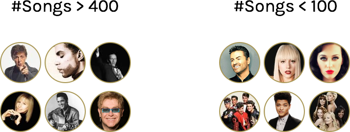
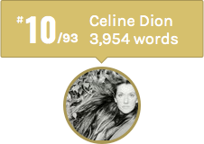
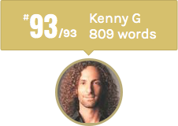
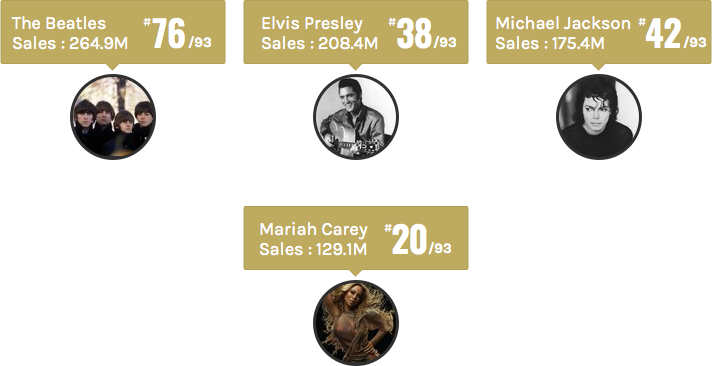
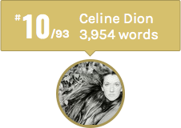
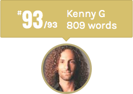
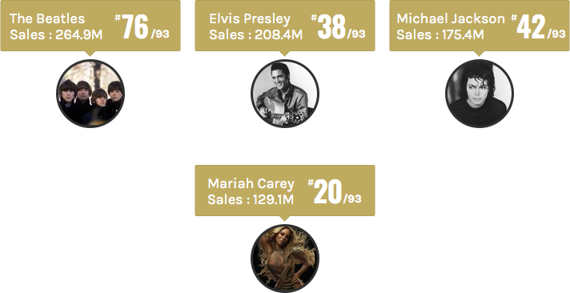

Ever since I read the excellent The largest vocabulary in hip hop I wanted to do a similar analysis across a more generalised list of musicians. I stumbled across this List of best-selling music artists and it seemed to cover a good cross section of popular musicians and genres.
These are the 93 artists that will be a part of this analysis.
The aim is to compare the vocabulary and the lyrical density of these musicians. Some of them have released a lot more songs than others because of the sheer longevity of their career and how prolific they are. There are musicians in the list with over 400 songs along with the ones with less than a 100.

To prevent the vocabulary size from being skewed purely by the number of songs released, the vocabularies are compared across the 100 densest songs (by total words) that they have released till date. Only 6 of these musicians have released less than 100 songs so it is a good threshold. Also, 100 songs comprises 8 to 10 albums of music which would span at least 5 to 10 years of work which should truthfully mimic the overall vocabulary and lyrical style of the musician.
Here are some definitions you should be acquanited with
• VOCABULARY The number of unique words (across any language) used by a musician in their 100 (or less) densest songs.
• LYRICAL DENSITY The total number of words (across any language) used by a musician in their 100 (or less) densest songs.
• LEARNING RATE On average, the number of words after which a new word is used by the musician. This is the ratio of Lyrical density/Vocabulary. If it is low it means new words are learnt faster.
MR. OBVIOUS
 There are 4 rappers in the list and they obviously are at the top of the vocabulary chart. Amongst them Eminem leads Jay-z, 2Pac, Kanye West and Black Eyed Peas by a big margin. One reason would be that he tends to use more words in his songs than the others. Eminem also has the overall highest words per song ratio of 1018.5
THE FREEWHEELIN'
There are 4 rappers in the list and they obviously are at the top of the vocabulary chart. Amongst them Eminem leads Jay-z, 2Pac, Kanye West and Black Eyed Peas by a big margin. One reason would be that he tends to use more words in his songs than the others. Eminem also has the overall highest words per song ratio of 1018.5
THE FREEWHEELIN'
 Given how articulate and descriptive his songs are, it is no wonder Bob Dylan ranks so highly. He also ranks at the top (#11) of learning rate (a brand new word is used by him after every 9th word).
THE POLYGLOTS
These superstars have an extensive vocabulary spread across multiple popular languages. Mildly interesting - Gloria Estefan worked as an English/Spanish/French translator during her early years and because of her language abilities, was once approached by the CIA as a possible employee. Her high ranking in the vocabulary chart comes as no surprise.
SURPRISE!

I had not expected a pop sensation like her to rank so high since they rely on simplicity to emote and capture the listener’s heart. Also, she is the only one who ranks in the top 15 by vocabulary as well as the total sales of her album.
#93

Even though he is the only instrumental artist in this list but some of his songs still have lyrics. Whoever said you need words to sell records.
Following is the graph showing average vocabulary per artist in each genre.
COMPARING GENRES
This chart shows the average vocabulary size of artists* in different genres.
Since it includes only 93 artists, it is not a good generalization. Some simple insights can still be taken. Hip-Hop is way ahead of the other genres. Folk comes in second but since there is only one folk artist (Bob Dylan) in the analysis it is not insightful. Latin comes in 3rd because of the artists writing in many languages but since only two artists fall in this genre it may not be true for the whole genre.
Pop is the genre with the most number of artists and its average vocabulary size (2464 words) is close to the global average vocabulary size (2677 words).
KEEP IT SIMPLE, SILLY!

The three top selling artists of all time rank low in the vocabulary chart. No wonder their music breaks the barriers of geography, age, language and it is admired globally. Conversely, Mariah Carey ranks high in both the charts (#9 in the sales chart and #20 in the vocabulary chart).
Given how articulate and descriptive his songs are, it is no wonder Bob Dylan ranks so highly. He also ranks at the top (#11) of learning rate (a brand new word is used by him after every 9th word).
THE POLYGLOTS
These superstars have an extensive vocabulary spread across multiple popular languages. Mildly interesting - Gloria Estefan worked as an English/Spanish/French translator during her early years and because of her language abilities, was once approached by the CIA as a possible employee. Her high ranking in the vocabulary chart comes as no surprise.
SURPRISE!

I had not expected a pop sensation like her to rank so high since they rely on simplicity to emote and capture the listener’s heart. Also, she is the only one who ranks in the top 15 by vocabulary as well as the total sales of her album.
#93

Even though he is the only instrumental artist in this list but some of his songs still have lyrics. Whoever said you need words to sell records.
Following is the graph showing average vocabulary per artist in each genre.
COMPARING GENRES
This chart shows the average vocabulary size of artists* in different genres.
Since it includes only 93 artists, it is not a good generalization. Some simple insights can still be taken. Hip-Hop is way ahead of the other genres. Folk comes in second but since there is only one folk artist (Bob Dylan) in the analysis it is not insightful. Latin comes in 3rd because of the artists writing in many languages but since only two artists fall in this genre it may not be true for the whole genre.
Pop is the genre with the most number of artists and its average vocabulary size (2464 words) is close to the global average vocabulary size (2677 words).
KEEP IT SIMPLE, SILLY!

The three top selling artists of all time rank low in the vocabulary chart. No wonder their music breaks the barriers of geography, age, language and it is admired globally. Conversely, Mariah Carey ranks high in both the charts (#9 in the sales chart and #20 in the vocabulary chart).